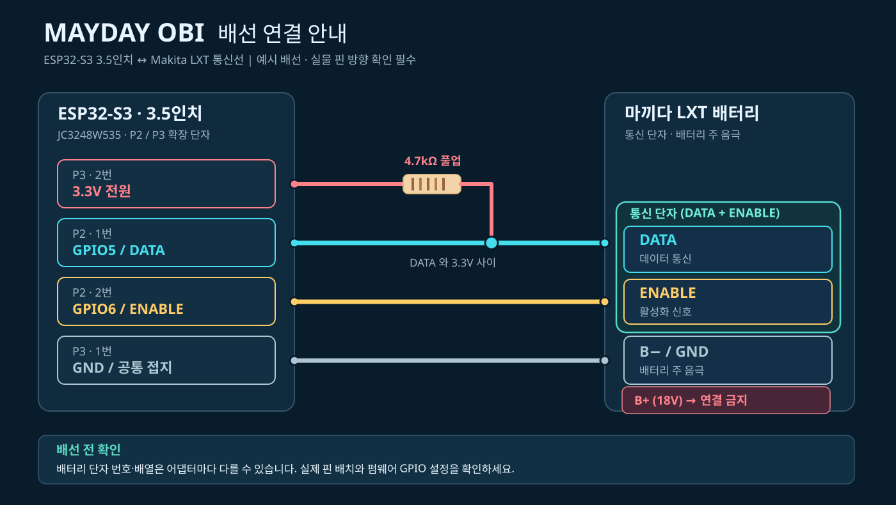

배포 준비 중ESP32-S3 · 3.5” · Makita LXT
MAYDAY OBI Firmware
USB 웹 설치와 BIN 다운로드는 검증된 정식 버전이 준비되면 제공합니다. 현재 설치 파일은 공개되지 않았습니다.
마끼다 LXT 배터리 전용 진단 장치. 2.8인치용 펌웨어를 옮기려다 반복되는 재부팅을 겪었고, 결국 ESP32-S3 3.5인치 환경에 맞춰 약 한 달간 직접 구현했습니다.

베트남 KST의 2.8인치 펌웨어를 사용하려 했지만 3.5인치 화면과 그래픽 라이브러리 호환 문제로 재부팅이 반복됐습니다. 결국 Claude와 약 한 달간 작업해 ESP32-S3 3.5인치에 맞는 프로그램을 구현했습니다.
실제 장치는 구동 중이며, 공개용 설치 파일은 준비 중입니다.
USB 웹 설치와 BIN 다운로드는 검증된 정식 버전이 준비되면 제공합니다. 현재 설치 파일은 공개되지 않았습니다.
ESP32-S3 기반 3.5인치 터치스크린 보드입니다. 마끼다 LXT 전용이며, 같은 ESP32-S3라도 화면·터치 칩·핀 배치가 다른 보드는 호환되지 않을 수 있습니다.


사진 표기 기준: USB-C, BOOT, RESET(사진에는 Rest로 표기), JST1.25 2P·4P·8P, HC1.0 4P, 스피커 연결 단자. 실제 GPIO 핀맵 및 전기적 사양을 확인한 자료는 아닙니다. 제품 사진의 기본 메뉴는 MAYDAY OBI 실행 화면이 아닙니다.

제작자가 실제 구매한 제품 링크입니다. 판매 옵션과 부품 사양은 구매 전 반드시 확인하세요. 동일 ESP32-S3 칩을 사용해도 보드별 핀맵·디스플레이 칩에 따라 호환되지 않을 수 있습니다.
원본 OBI의 공개 자료를 참고한 목록입니다. MAYDAY OBI 3.5인치에서 모든 항목을 직접 검증했다는 뜻은 아닙니다. 실제 호환성은 BMS 기판과 펌웨어 상태에 따라 달라질 수 있습니다.
중요: 배터리 외부의 BL 모델명만으로 지원 여부를 확정할 수 없습니다. 동일 모델에도 다른 BMS 기판이 탑재될 수 있으며, 정보 읽기와 오류 해제는 별도 기능입니다. 원본 문서의 LIPW017에는 충전 후 다시 잠기면 알려진 해결법이 없다는 주의사항도 있습니다. 손상된 셀·퓨즈·배선 문제는 오류 기록을 지우더라도 해결되지 않습니다.
출처: Open Battery Information Makita Wiki (2026-07-12 편집 기준). 메이데이 펌웨어의 호환성 검증 결과와는 별개입니다.
MAYDAY OBI는 Martin Jansson의 Open Battery Information을 바탕으로 제작한 3.5인치 ESP32-S3용 프로젝트입니다. 원저작자의 공개 기여에 감사드립니다.
원본: MIT License · Copyright (c) 2024 Martin Jansson. 원본 코드 배포 시 저작권·허가 고지를 유지해야 합니다. MAYDAY OBI 자체 펌웨어의 배포 라이선스는 별도 결정 전입니다.
독립적인 개인 제작 프로젝트이며, 원저작자 및 Makita의 공식 승인·후원을 의미하지 않습니다. 배터리 보호회로 오류 해제는 셀 안전이나 정상 수리를 보증하지 않습니다.